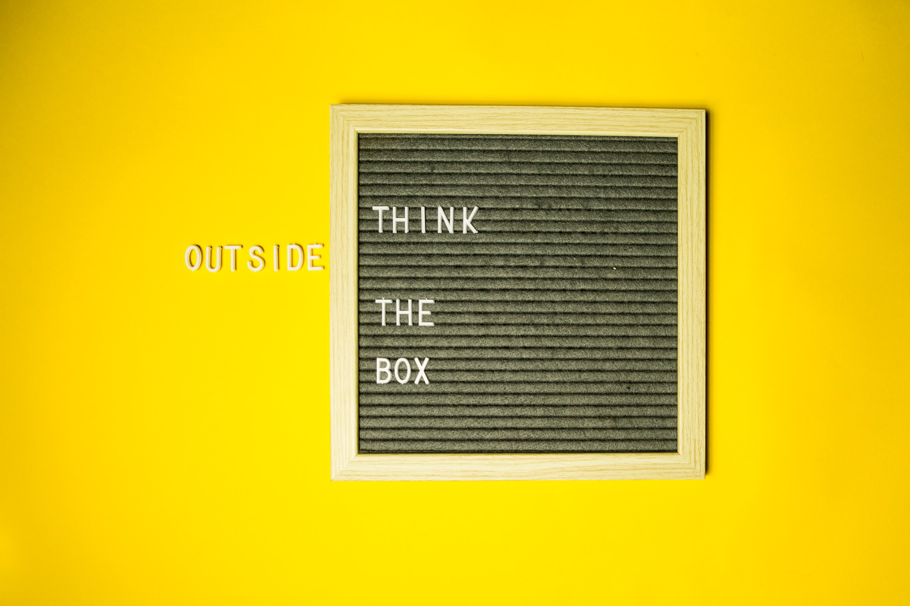

Dôtés d'un QI supérieur à la moyenne et faisant partie des neuro-atypiques, on les appelle les zèbres, les indigos ou encore les HP, les hauts potentiels sont connus pour partager certaines particularités.
Si cet atypisme peut être perçu comme une faiblesse, de par leurs parcours qui peuvent être, à leur image, atypiques, leur fonctionnement cognitif différent ou par les difficultés qu'ils peuvent avoir
à s'adapter à un milieu très normatif, ils ont néanmoins une vraie valeur ajoutée à apporter à une entreprise.
S'ils évoluent dans un environnement qui les stimule et dans lequel ils se sentent entendus et considérés, les zèbres peuvent devenir un véritable atout pour vos équipes et faire preuve d'une grande implication.
Leurs particularités font d'eux d'excellents éléments à des postes stratégiques dans des activités telles que le management, l'encadrement d'équipes, la gestion de projet,
la business analyse, les ressources humaines ou encore le développement de stratégies.
Souvent hyper-sensibles et ayant un besoin accru de sens dans leur quotidien, ils seront particulièrement attentifs à la congruence entre les valeurs de l'entreprise et la
réalité du quotidien au sein de celle-ci ainsi qu'à la cohésion au sein des équipes. Penser une stratégie globale pour attirer et fidéliser ces talents ainsi que développer une marque employeur forte seront donc des atouts considérables
qui profiteront à l'ensemble de l'entreprise et créeront un environnement attractif pour l'ensemble de vos candidats et candidates.
S'ils ont beaucoup de choses à apporter à une entreprise, les zèbres ont aussi besoin d'un environnement dans lequel ils peuvent bénéficier d'une vraie autonomie dans leurs activités.
